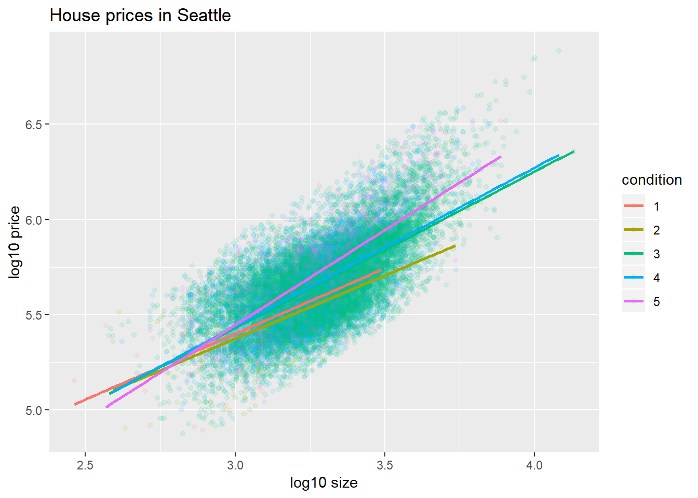
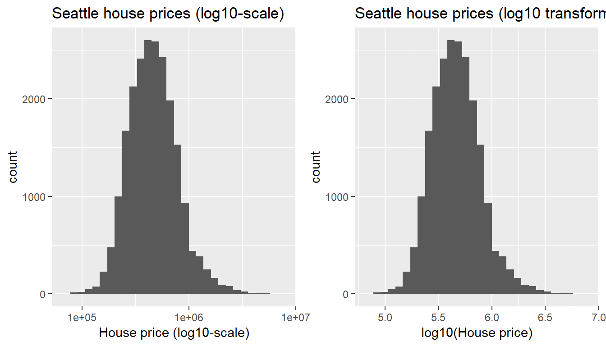

Term Project
Everything in this course builds up to the term group project, where there is only one learning goal: Engage in the data/science research pipeline in as faithful a manner as possible while maintaining a level suitable for novices.

4. Resubmission - Fri 12/21 5pm
- Revise your work based on delivered feedback.
- Complete remaining sections.
- Complete “Inference for multiple regression” and “Conclusion” sections.
- While you only need to present the results of one model in this term project, in this section make a brief mention why you chose one model over another.
- Perform a residual analysis.
- Added on 12/10: You do not need to perform any simulations of sampling/bootstrap/null distributions. You only need interpret the p-value and confidence interval columns of your regression table.
- Added on 12/10: Use R Markdown footnotes for citations. For example, adding
^[Here is an example footnote.]will add an automatically numbered footnote as seen here1 and here2. Please use MLA citation format.
- Group leader: Once the resubmission is complete
- Knit
Term_Project.Rmdone final time. - Republish to Rpubs.com
- Added on 12/13 Post
Term_Project.Rmdand all other necessary files on Moddle.
- Knit
- After your group has resubmitted the project complete this Google Forms survey. 5% of your term project grade is based on completion of this survey.
Evaluation criteria
You will be evaluated on the following criteria, which not only emphasizes the data, statistics, and modeling, but also the communication, an often neglected criteria:
- The honor code
- Your project must adhere to the Smith College Academic Honor Code Statement. In particular all external sources must be cited in your submissions.
- The report
- Is the grammar correct and are there no misspellings? (Click the ABC spell-check button to the left of the “Knit” button)
- Is the writing crisp and concise or is it unnecessarily verbose and wordy? Is the writing clear or is it sloppy?
- Did you make use of Markdown formatting tools to format the document (bold, italics, url links, etc)?
See RStudio Menu Bar -> Help -> Markdown Quick Reference for all formatting options. - Is the final project document clean and easy to read?
- The science and the data
- Is the data’s context/source clearly discussed/given? Recall: Numbers are numbers, but data has context.
- Are all limitations and issues with the data addressed?
- Is the research question of interest clearly stated?
- Are the plots/tables polished? Titles, axes labels, legends?
- Are the plots/tables truly informative or are they included merely for their own sake?
- The statistics and the analysis
- Are all statistical/modeling and analyses interpretations valid?
- Are limitations of the analysis (if any) clearly stated?
- Are the non-statistical interpretations accessible to an audience not well-versed in statistics?
- The code
- Is your code legible and understandable to someone not in your group? Could someone else look at the code in your
.Rmdfile, understand it, and use it for themselves? In other words, is the research easily reproducible? - Is your code cleanly formatted? Are you using indentations, spaces, and line breaks effectively?
- Some examples of good coding style can be found here
- Is your code legible and understandable to someone not in your group? Could someone else look at the code in your
- The rest
- Did you demonstrate effort and engagement during the semester long process?
DONE: 1. Groups - Fri 9/21 5pm
To do:
- Form groups of 2-3 students and pick a group name.
- Designate a group leader who will:
- Slack message your group name in a Direct Message that includes
- All group members
- Myself
- Complete the following Google Form
- Slack message your group name in a Direct Message that includes
Notes:
- If you need a group to join please Slack me.
- All groups members are expected to contribute and a system will be put in place to hold all group members accountable for their work.
DONE: 2. Proposal - Fri 10/19 5pm
To do:
- Background reading on data: Read ModernDive Chapters 4.1 - 4.3
- Find a dataset
- Submit your group proposal
Find a dataset
- Requirements:
- The data should be stored in a single Excel spreadsheet or CSV file. Read ModernDive 4.3 on how to import a spreadsheet into R.
- The data should be in “tidy” data format, which is defined in ModernDive 4.1. If you need help converting a dataset to tidy format, visit the Spinelli tutoring (Sunday-Thursday 7-9pm) center for help or ask me!
- Columns/Variables. You dataset should have the following variables that will be the focus of your analysis. Read ModernDive Chapter 6 to the end of Section 6.1 for what these terms mean.
- One numerical variable to be used as your outcome variable.
- One categorical explanatory/predictor variable with no more than 5 levels.
- One numerical explanatory/predictor variable.
- Any identification variables (read ModernDive 4.2.2 for a distinction of identification vs measurement variables)
- Rows/Observations: At least 50 observations.
- Possible data sources
- Consult the Spinelli Quantitative Learning Center Data Counselor Raul Zelada Aprili
- Google Dataset Search
- data.world
- Kaggle
Submission Format
Follow the project_proposal.R template file and submit this on Moodle by Friday 10/19 5pm. In this template file, I’ve included an example based on the exploratory data analysis of the Seattle House Prices data in ModernDive Chapter 12.1.1.
Where is this heading?
For the Phase 3 of the project “Initial Submission”, due Friday 11/9, you’ll be making a figure like Figure 12.6 in ModernDive Chapter 12

DONE: 3. Initial submission - Fri 11/9 9pm
To do:
- Changed on 11/2 Due time changed from 5pm to 6pm.
- Download the
Term_Project.RmdR Markdown template file. Recall the past examples you saw previously. - Read the evaluation criteria below and then complete the following sections:
- Introduction
- EDA
- Multiple regression
- Citations. Be sure to replace the Rpubs link with a link to a published Rpubs webpage of your term project.
- Group leader: Submit this on Moodle.
Tips
1. log10 transformations
If you have skewed explanatory and/or outcome variables, you should be log10()-transforming them and using the transformed variables in your regression and not just visually displaying them with transformed axes. See below:
library(ggplot2)
library(dplyr)
library(moderndive)
# log10() transform the skewed variables
house_prices <- house_prices %>%
mutate(
log10_price = log10(price),
log10_size = log10(sqft_living)
)
# Plot price with re-scaled axes:
ggplot(house_prices, aes(x = price)) +
geom_histogram() +
scale_x_log10() +
labs(x = "House price (log10-scale)", title = "Seattle house prices")
# Plot log10-transformed price with regular axes:
ggplot(house_prices, aes(x = log10_price)) +
geom_histogram() +
labs(x = "log10(House price)", title = "Seattle house prices") 
2. Model selection
Which model should I use? Parallel slopes or interaction model?
3. Useful tips for R projects
Jenny wrote up a document of useful tips for R projects for another class. Give it a quick scan for lots of useful tips!
- HTML document
project_tips.RmdR Markdown source code
Become an R Ninja!